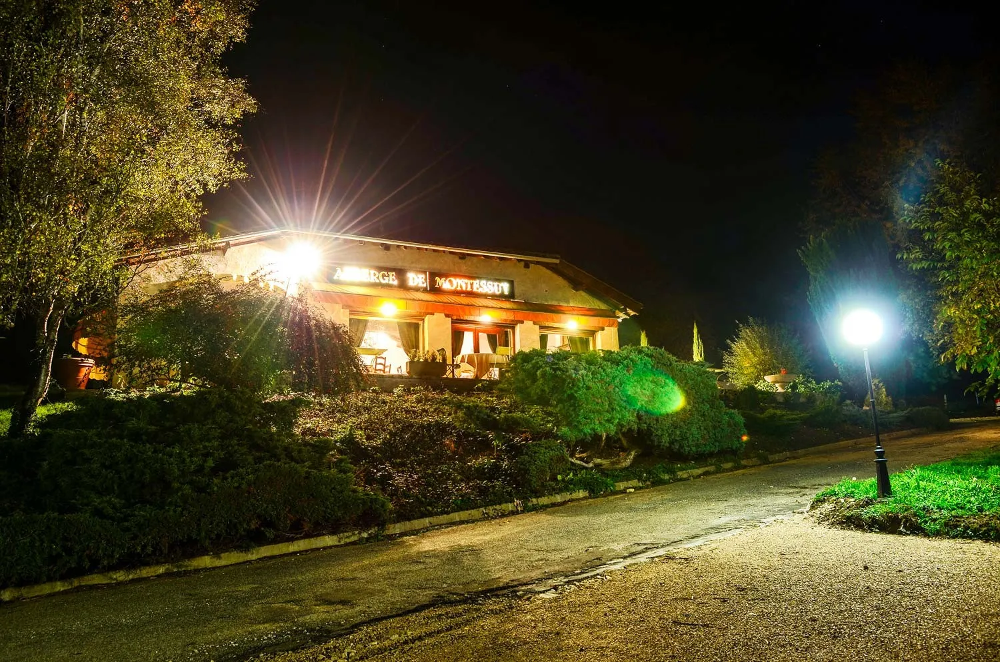
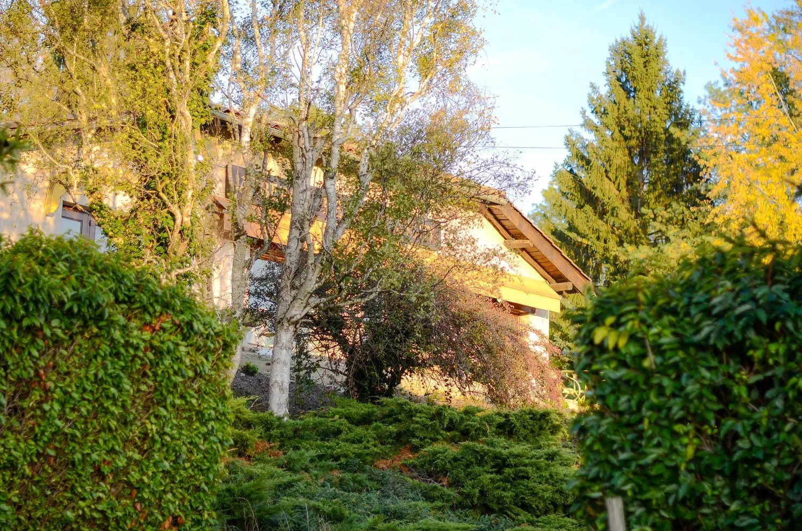
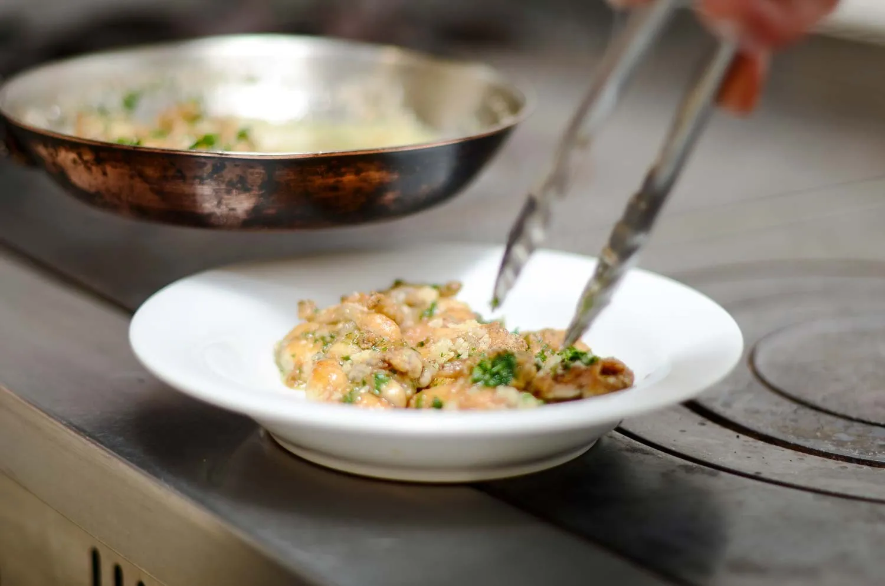
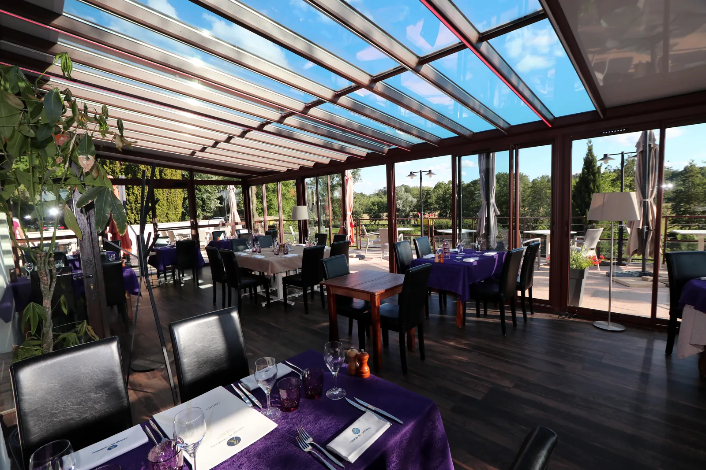
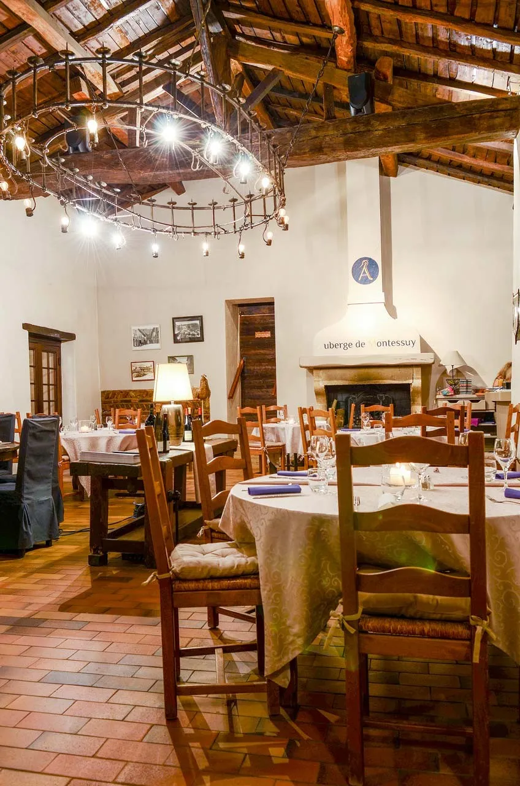
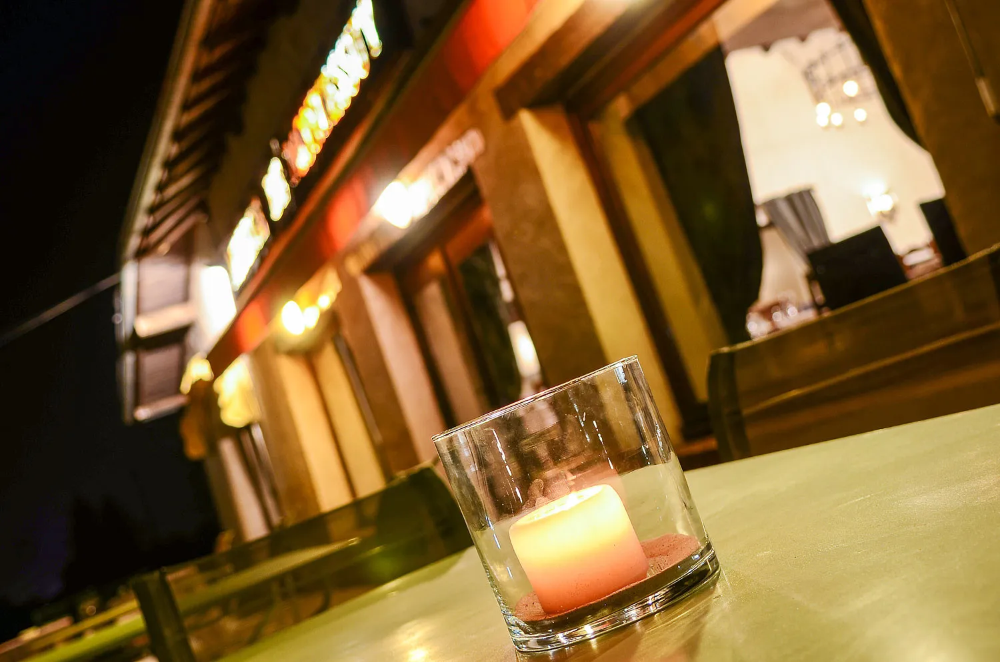
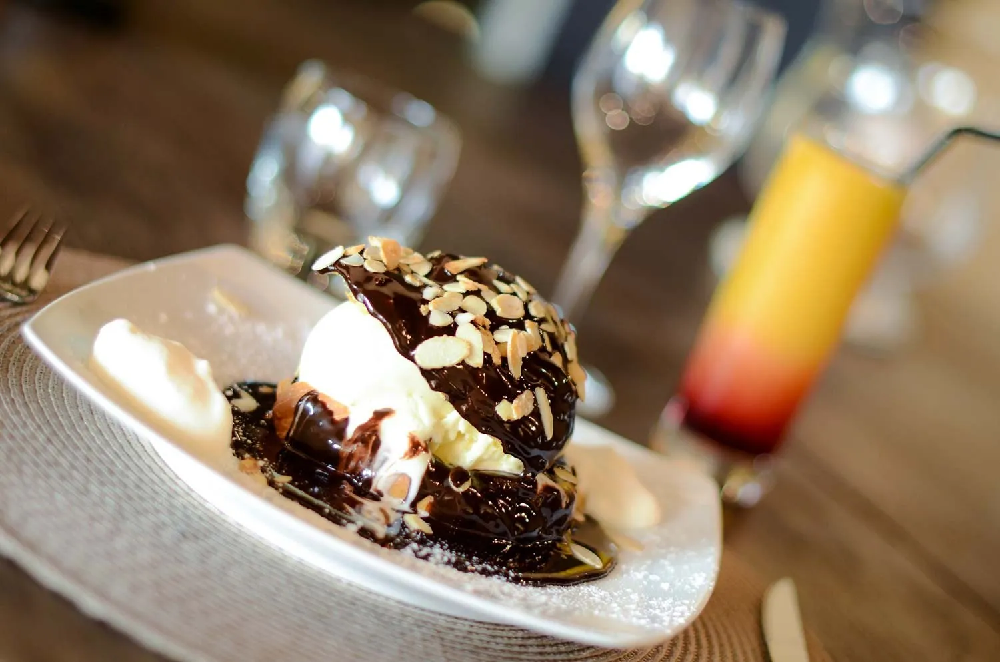
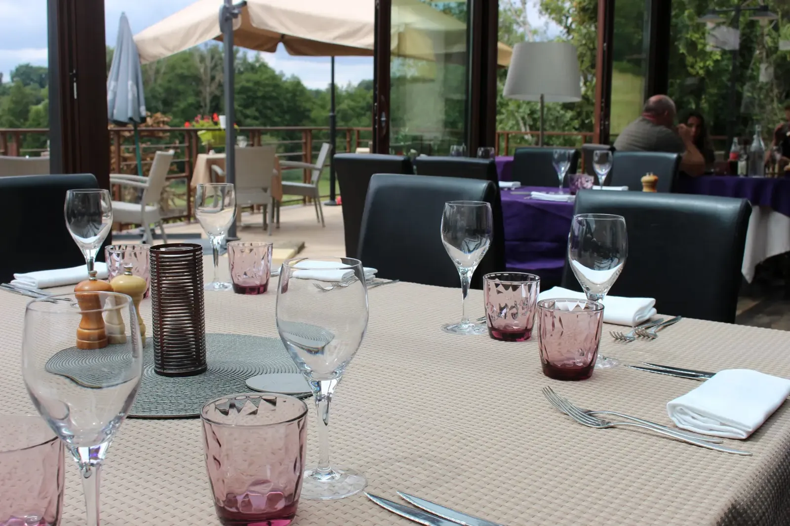

Nichée au cœur de la Dombes, l’Auberge est une vraie pause gourmande, dans une ambiance chaleureuse.


Notre cuisine
Entre Dombes et Bresse
L’Auberge de Montessuy perpétue son excellence depuis des générations. Une cuisine de saison et d’inspiration, gourmande et innovante, généreuse et source de plaisir. Menus ou à la carte.

Nos produits
Une sélection d’excellence
Les produits sont le reflet de notre terroir. Nous créons une vraie relation de partenariat et de confiance avec nos producteurs locaux et régionaux, dont nous sélectionnons rigoureusement les produits.
En images
Bienvenue chez nous
LieuLa salle et sa cheminéeAssiettesFoie gras

LieuLa vérandaAssiettesPoisson et légumesLieuLa terrasseAssiettesUne assiette de saison

LieuLa salle et son lustreAssiettesCuisine de saison

LieuÀ la nuit tombée

AssiettesDessert maison

LieuUne table en terrasseAssiettesVolaille en sauce